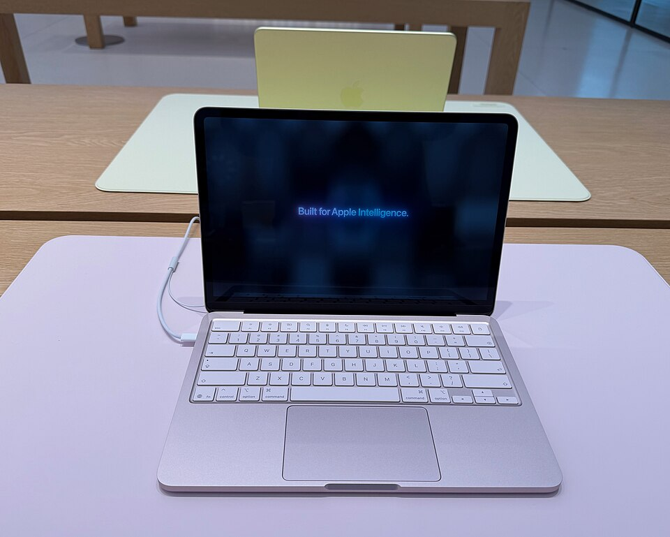

The MacBook Neo is a laptop in the MacBook series that is developed and manufactured by Apple. It is the first Mac to use an A-series chip found in the iPhone rather than the M-series chips found in other Apple silicon Macs. The MacBook Neo is positioned as the entry-level MacBook, situated below the MacBook Air and MacBook Pro. It was first announced on March 4, 2026, and released on March 11, 2026. As of April 2026, it is the cheapest laptop sold by Apple, with a starting price of US$599 for regular buyers and US$499 for those who qualify for education pricing.

Apple introduced the MacBook Neo as part of its March 2026 product launches on March 4, 2026.It has been posited that the strategy behind the MacBook Neo is as an entry-level laptop aimed at mainstream users and students. According to an Apple marketing executive, the name "MacBook Neo" was chosen to feel fun, friendly, and fresh. The MacBook Neo is the lowest priced laptop that Apple has ever sold, with a starting price of US$599 or US$499 for those who qualify for education pricing, such as college students and school staff of all grade levels. Pre-orders began at launch, with general release beginning on March 11, 2026. The MacBook Neo's name and model identifier (A3404) was accidentally revealed a day early by Apple when regulatory documents for the MacBook Neo were published on Apple's website.